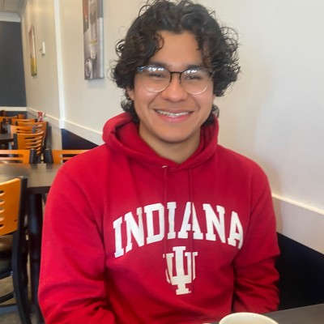
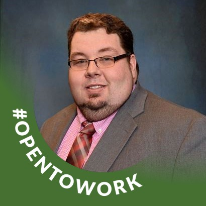

Legal Professional
Emily Drummond
Biography forthcoming. Add a short introduction, areas of focus, education, and connection to PLAN here.
This is a pilot law clinic. We are tasked by the Indiana Supreme Court to create a new legal license that lowers barriers to legal help. Future license holders will inform, prepare, and guide Hoosiers through legal issues at the lowest possible cost. We are holding free legal consultations to train the first generation of new legal practitioners.
The clinic is staffed by supervising attorneys with experience in family and consumer law, alongside legal professionals who handle matters under direct supervision as part of their clinical training.
Licensed attorneys who review and sign off on every matter.
A new profession focused on helping with common, everyday legal challenges.
Local nonprofits and legal aid organizations we refer to and work alongside.
The clinic was founded to give legal professionals hands-on experience while filling a real gap in access to family and consumer legal help in our community.
Our clients are referred by schools and social services organizations that see these problems first.
We track outcomes, not just counts, and adjust how we work based on client feedback each term.
Direct client support
Legal Professional
Biography forthcoming. Add a short introduction, areas of focus, education, and connection to PLAN here.
Legal Professional
Biography forthcoming. Add a short introduction, areas of focus, education, and connection to PLAN here.

Legal Professional
My name is Anthony Reyes. Raised in a diverse cultural background, I realized that though we may have differences, we share our problems. This inspired me to seek a way to create an impact on these shared problems. This is why I’m eager to serve Hoosiers as an Allied Legal Professional. I'm ready to start helping you through the difficulties of divorce or consumer debt and grow the People’s Legal Assistance Network (PLAN) into something great.
Anthony Reyes graduated from the Luddy School of Informatics, Computing, and Engineering at Indiana University Bloomington. After joining a research practicum at the Indiana University Maurer School of Law, he was involved in the creation of PLAN and is now a first-generation Allied Legal Professional, giving advice in matters of divorce and consumer debt.
Attorney oversight

Supervising Lawyer -pending license -
Hi, I’m Elmer Thoreson. I’m from Indiana, the region, specifically, and growing up, my family couldn’t afford a lawyer. I know a lot of Hoosier families are in that same boat today. That’s a big part of why I became a founding attorney at the People’s Legal Assistance Network (PLAN). I help people dealing with debt collection understand their options, get practical advice, and connect with other resources.
Elmer Thoreson attended Ivy Tech Community College of Indiana, Indiana University Northwest, and Indiana University Maurer School of Law. He has practiced law for the last 7 years, but returned to Bloomington to help establish PLAN. Elmer is the supervising attorney for debt collection matters. Pending Addmission to the Indiana Bar
Supervising Lawyer
Biography forthcoming. Add a short introduction, practice background, supervisory role, and connection to PLAN here.
Fill out intake and a coordinator will follow up within two business days.
Request Help